2025浙江省决赛re复现
前言
这也是受到此大佬博客：https://seeker-fang.github.io/的启发，决定来一波省赛题目复现。
具体这是什么比赛，我也不知道，总之是一个省级赛事，类似于河南的御网杯应该，难度也不算特别大（我说前两题）
基本上花一天一夜给复现了，还是有一点菜
Re-1 你是我的天命人吗
首先查壳，没有壳
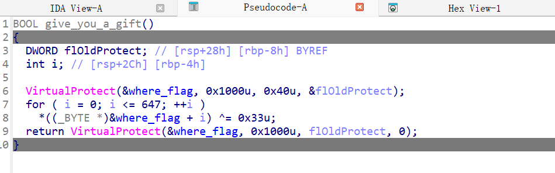
看到这个函数基本上就可确定这是一个SMC了。
为什么这么说呢？
首先，where_flag函数本身是反编译不出来的
其次，这个函数一般是和内存某部分的权限（如可读可写等）相关。第三个参数就是一个内存保护常量，0x40是宏\#define PAGE_EXECUTE_READWRITE 0x40 给的权限是可读可写可执行
对于这种SMC，除了用python写脚本改代码，还可以直接动调来写
1 | start=0x1400018C5 |
主要用的ida_bytes的字节读写api。
然后就会变得很养眼：
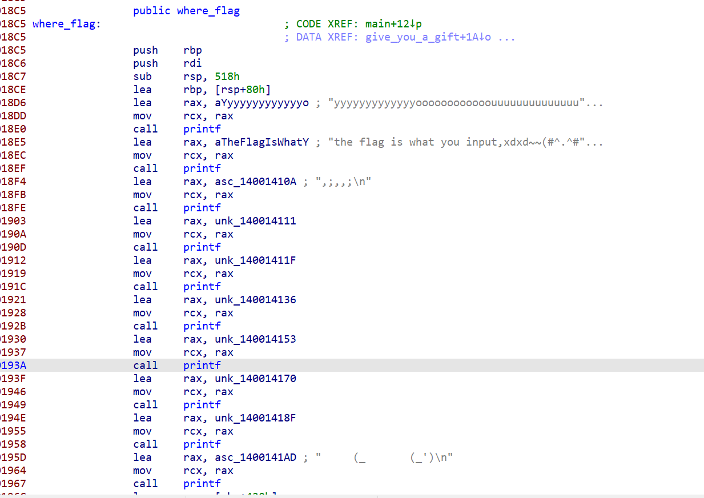
下面演示动调做法。直接在关键语句下一个断点即可
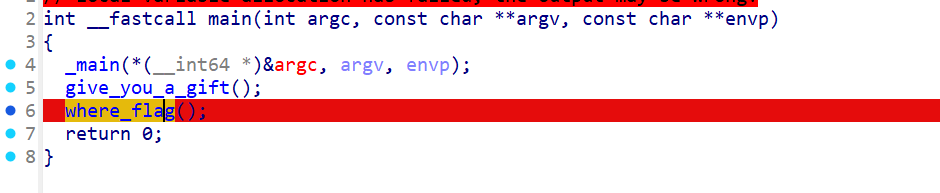
运行之，按U解除定义，按C转为代码，按P定义为函数
1 | int where_flag() |
看出来是一个简单的异或加密，解密即可
exp:
1 | cipher=bytes.fromhex("4440514050437D3E386C3A3F3E6F386D232124202D7420742C2F2E282525782D124344471015405A") |
总结：简单的SMC，恐怕属于签到题
这里本人太无知了，python有一个内置库binascii，功能：
做二进制数据和各种文本表示形式之间的转换，
比如：
十六进制字符串 → 原始字节 binascii.unhexlify()
原始字节 → 十六进制字符串 binascii.hexlify()
二进制 -> base64 形式 binascii.b2a_base64
base64 -> 二进制 binascii.a2b_base64
CRC 校验 binascii.crc32(data)
搬运的我师傅的博客：
1 | import binascii |
另一种：
1 | enc=bytes.fromhex('4440514050437D3E386C3A3F3E6F386D232124202D7420742C2F2E282525782D124344471015405A') |
Re-2 androidtest
这是一个apk文件，对于apk文件怎么查壳等呢？
可以用老牌工具MT管理器，抑或是pc端专门查壳的工具，我这里就选择不查壳，直接硬刚。我目前只在取证比赛见过加固的app，说句题外话取证比赛真的很仿真，很多病毒小流氓软件确实是360加固
jadx部分代码没有反编译出来，选择用JEB看看
主逻辑先调用了这个i函数，点进去分析，其中j0.a.a疑似是base64解码。
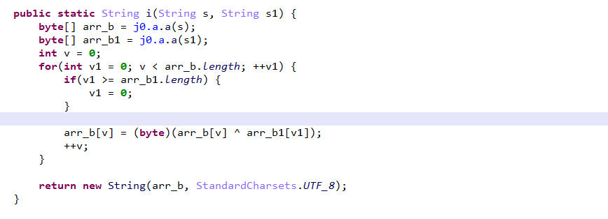
重命名函数，发现以下内容：
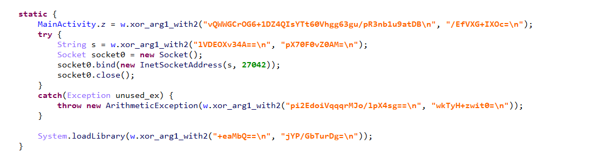
猜测只需要逐个将第一个参数的值进行异或解密就好了
这里用cyberchef实现。
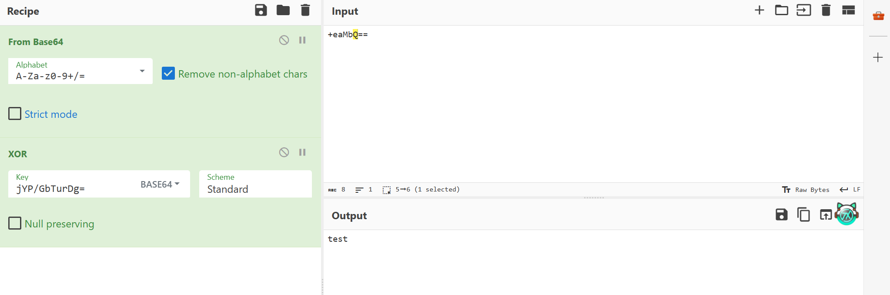
第一段结果：ABCDEFGHIJKLMNOPQRSTUVWXYZ234567=
第二段：0.0.0.0
第三段：divide with zero
第四段：如上图所示
这里没有明显的flag，还得继续往下看代码分析
看到最后有一行：public native boolean ret_str(String arg1)
因此还需要去ida进行分析
这里说一嘴main函数 onCreate里面这部嗯充斥对控件的操作，最后有个设置监听事件需要特别留意，其他的都是和UI相关的
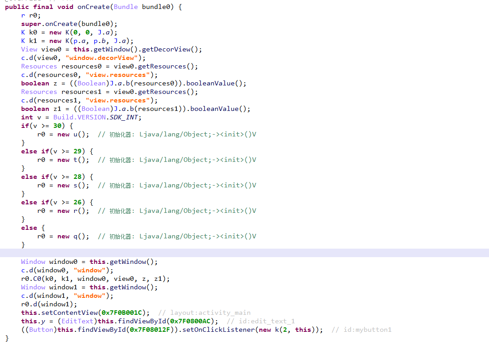
更改变量类型之后（需要现在结构体引入下jni），这个函数就会变得十分清晰。从中可看到，就是一个对比的操作。
1 | bool __fastcall Java_com_example_myapplication_MainActivity_ret_1str( |
JEB交叉引用看这个函数被谁调用，发现正是上文提及的监听函数k类
我们进去分析代码看看
这里有一个判断句，结果是Success！（异或解密之后）
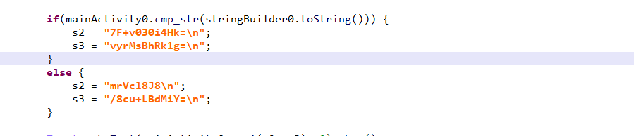
1 | case 2: { |
从中可看出，这就是一个base32，首先进行长度校验，传入的W.i实际上就是上文解密得到的一个base32表，注意看刚开始还会进行异或操作，所以异或也要算上！
用厨子得到flag
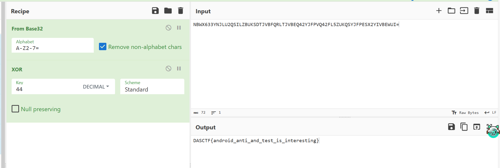
Re-3 VM（待复现）
这是一道虚拟机逆向
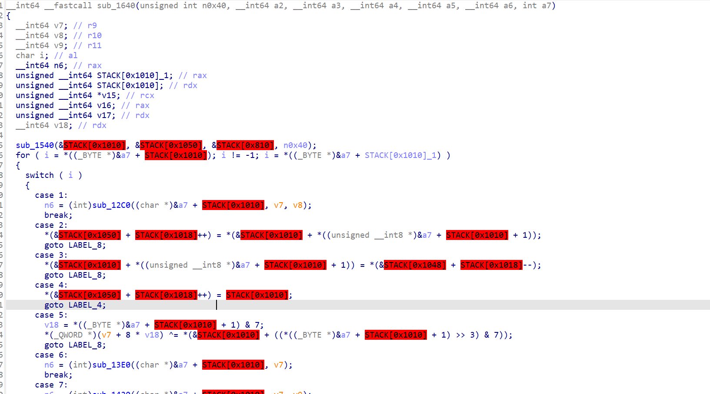
main函数存在一个虚拟机函数，一看就是虚拟机
这个虚拟机似乎很多取值是在栈上取值
刚开始需要知道,main函数的三个参数分别是：参数个数，参数数组和环境变量
而且代表参数数组的argv[0]一般是程序名字，所以argv[1]对应第一个命令行参数，以此类推
所以main函数整体我们已经能大概分析出来：
1 | __int64 __fastcall main(int argc, char **argv, char **envr) |
简单来说就是先读取program的值，然后读取第一个参数，俩合在一起传给VM函数
紧接着我们仔细看看vm函数内部实现：
1 | __int64 __fastcall init( |
刚开始调用了这个函数，看样子是给STACK里面赋了一些值，怀疑是加密时的密钥或者密文。再往下看看虚拟机是怎么实现的
里面调用了一些小的函数形如以下：
1 | __int64 __fastcall sub_13E0(__int64 a1, __int64 r9) |
可看出只是对寄存器进行了赋值操作。其他的都是形如此类
常规对抗VM的思路就是提取指令集，分析其每个指令的含义，自己写一个解释器
但是在这里借鉴了大佬博客：https://seeker-fang.github.io/2026/03/17/浙江省决赛re复现/#25年浙江省决赛re复现
可以用trace的方法跟踪关键流程，拿到关键流程上的信息，进行分析
由于静态分析看到主要进行数值变换的地方在这里：
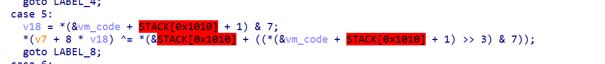
我们可在这里下断点，让ida每次运行到这里就来一个寄存器的值的输出。看看到底是进行了什么变化
看对应地方的汇编：
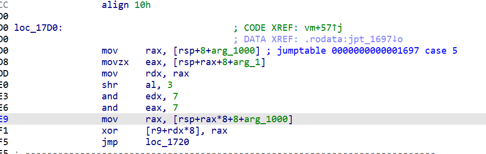
注意这里就是r9+rdx*8和rax异或
如何trace呢，直接右键添加断点，然后再次右键点击编辑断点
偷下大佬图片：
 { |
Step 0：字符串 → UTF-8
1 | stringToUtf8Bytes(arg0) |
👉 得到：
1 | P (明文字节) |
Step 1：加长度头（4字节，大端）
1 | newobjrange[0] = (len >> 24) |
👉 得到：
1 | [ len(4 bytes) || P ] |
Step 2：按矩阵大小 padding
1 | padToBlock(data, matrix_size) |
矩阵是 3×3，所以：
👉 每 3 字节一组，不够就 padding
Step 3：矩阵加密（核心）
1 | matrixEncryptBlocks(data, MatrixCrypto) |
矩阵：
1 | [1 2 3] |
👉 本质：
1 | C_block = M × P_block (mod 256) |
Step 4：XOR
1 | xorBytes(data, [90, 60, 231, 145, 47]) |
👉 循环 XOR：
1 | data[i] ^= key[i % 5] |
Step 5：RC4
1 | RC4.encrypt(data, "HarMonyOS_S3cur3_K3y!2025") |
👉 标准 RC4
Step 6：Base64（变种）
1 | CustomBase64.fromStandard(toString) |
👉 说明：
- 先是 CryptoJS 标准 Base64
- 然后做了一层 字符表替换
我们看看矩阵加密：
1 | public Object matrixEncryptBlocks(Object functionObject, Object newTarget, EUtils this, Object arg0, Object arg1) { |
这就是做了个矩阵乘法，函数名已经给了提示
再看看变种Base64：
1 | public Object static_initializer(Object functionObject, Object newTarget, CustomBase64 this) { |
码表也给了
让ChatGPT写出脚本如下：
1 | import base64 |